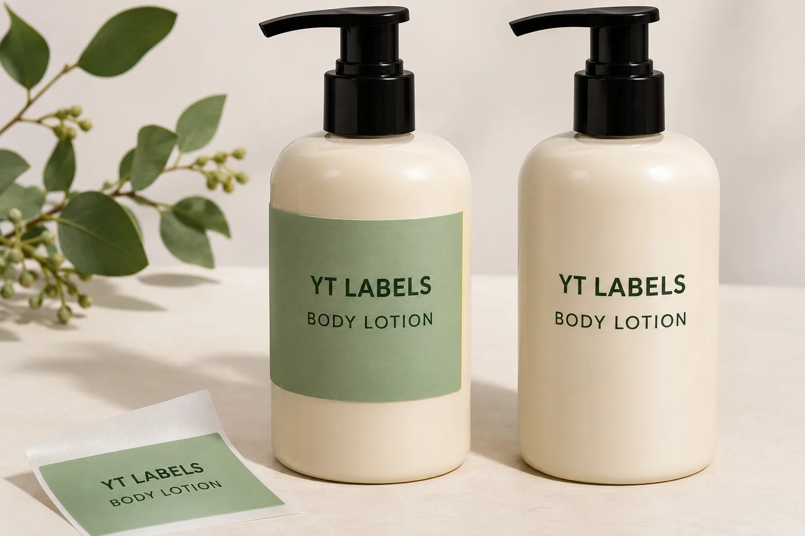
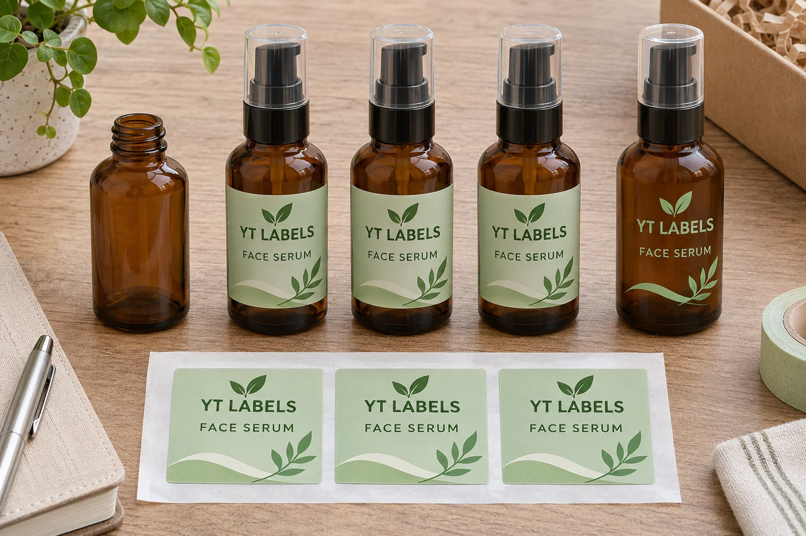

Choose adhesive labels when you want to buy undecorated bottles and commit the artwork through a separately controlled label order. Consider direct bottle printing when the container decorator can supply the approved design, quantity and finish on the exact bottle you plan to fill. Compare both routes at the point where your co-packer receives usable packaging, rather than comparing a label price with a bottle-decoration price.
For a skincare brand launching several variants, the important difference may be when the bottle becomes tied to one design. A stock bottle and an unapplied label can be tracked separately. A directly decorated bottle already carries its artwork. Neither arrangement removes the need to approve the finished pack, but they put different questions into the purchasing brief.

Define the delivered pack before asking for prices
Start with the bottle reference, material, finish, closure and usable decoration area. Include approved artwork, quantity for each version and the pack's intended handling. Then name the delivered unit: loose printed labels, decorated empty bottles, or another explicitly quoted supply. A price per label cannot be compared with a price per decorated bottle until the missing bottle, application, handling and freight items are visible.
Berlin Packaging lists both screen printing and pressure-sensitive labeling among its decoration methods and says eligibility varies by product. This establishes real alternatives to discuss with the appropriate supplier. It does not establish that YT Labels supplies directly printed bottles. YT Labels' cosmetic product range concerns printed labels; request the exact label construction and application requirements for that route.
For direct printing, ask the decorator whether the supplied bottle, coating, artwork and required views suit its proposed process. For adhesive labels, ask the label printer and applicator to confirm the label panel, construction and supplied format. Obtain representative decorated packs where needed to answer the remaining appearance and handling questions.
Locate the artwork commitment in each route
Suppose three lotion variants share one bottle. In a label-based plan, the brand may keep one approved undecorated bottle reference while buying a separate number of labels for each version. Confirm which labels are actually ready for production, who applies them, and the stock identification used at that step. This can support a common bottle inventory; it does not promise arbitrary label minimums or effortless changes.
With directly decorated bottles, ask for quantities by artwork version and the last point at which artwork can change. If one variant is undecided, ask whether it can remain undecorated or be scheduled separately, and what that does to price, quantity and timing. Those are questions for the actual offer, not assumptions about every decorator.
Changing an ingredient panel after printing may affect labels or decorated bottles differently. Do not include an assumed salvage or overlabel option in your comparison. Obtain a supported rework proposal separately if you need one. Count the packaging already committed to the old artwork in each route.

Build one comparison at the receiving point
| Input | Adhesive-label route | Direct-decoration route |
|---|---|---|
| Bottle and quantity | Identify bottle source plus required labels per design and component. | Identify eligible bottle and decorated quantity per artwork. |
| Artwork commitment | Record label approval and print release; identify undecorated bottle stock separately. | Record decorator approval and the stage when bottle stock is assigned to a design. |
| Work before filling | Name the party applying labels and its accepted supplied format. | Name the party receiving decorated bottles and any further identification work. |
| Evidence and total | Include representative label-on-bottle approval, application work and onward delivery. | Include representative decoration approval, bottle supply and delivery to the same receiver. |
Fill each row from the two written proposals. Add separately charged setup, samples, packaging, application and freight only where the proposal excludes them. Keep uncertain items open; an empty cell is not a zero-cost service. If one proposal supplies bottle bodies and the other does not, add the actual bottle quotation before comparing totals.
The result should identify a route that can deliver the required pack, not a universal winning process. A label plan can be sensible when bottle stock is shared across changing versions and a supported application route exists. Direct decoration can be sensible when the artwork is stable and the decorator can meet the approved pack requirement with acceptable quantities and timing.
Stop when the comparison changes the requirement
Hold the choice if the two proposals assume different bottle surfaces, versions, finish requirements or receiving sites. Also hold if one route relies on an unapproved physical result or an unnamed party doing application work. Resolve that missing scope before treating a lower headline price as a saving.
If adhesive labels are selected, the next decision is what the receiving applicator needs. For comparing the approval evidence, use the proof and physical sample guide. These checks qualify the chosen route; they do not replace the initial supply comparison.
Request the adhesive-label side of your comparison
Send the bottle reference, dimensions, quantity by artwork, intended finish, application party and destination. State which costs and approvals you need confirmed alongside a direct-decoration proposal. The form prepares an inquiry message; send artwork and pack photos by email or WhatsApp.
Prepare a label comparison inquiry